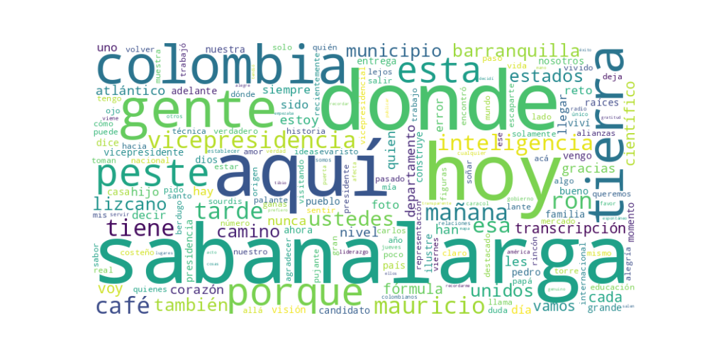

Seguidores: 21,948
1. Perfil de Comunicación: El candidato proyecta un estilo de comunicación predominantemente informal, cercano y personal. Utiliza un lenguaje coloquial y afectivo, lleno de regionalismos costeños (ej. "pelao'", "pa’lante", "vaina", "perrenque"), que busca crear una conexión emocional inmediata con el público. Su narrativa se estructura en torno a su historia de vida, presentándose como un hombre del pueblo que, pese a sus logros académicos y profesionales (científico, Harvard), no olvida sus orígenes humildes. La comunicación es altamente visual y emotiva, priorizando la autenticidad y la calidez sobre tecnicismos formales.
2. Temas Principales: 1. Identidad Costeña y Orígenes: El tema más recurrente. Constantemente enfatiza su procedencia del Atlántico (Sabanalarga, Barranquilla), usando su historia personal como metáfora de ascenso y representación. Ejemplo: "Un hijo de Sabanalarga, camino a la vicepresidencia de Colombia... de la tierra donde la inteligencia es peste". 2. Educación y Ciencia: Presenta la educación como herramienta de transformación social y la ciencia como pilar de su propuesta técnica. Ejemplo: "No vengo por un cargo, vengo a que la educación sea la llave para todos" y "llevando la ciencia, la innovación y las ideas al lugar donde se toman las decisiones". 3. Relación Internacional (con Estados Unidos): Destaca su experiencia y credenciales en EE.UU. como un activo único para restaurar y fortalecer la relación bilateral. Ejemplo: "[Estados Unidos] me entrega la green card... como un científico destacado... eso significa que los Estados Unidos ya confía en mí". 4. Liderazgo con Servicio y Autenticidad: Contrasta un liderazgo ruidoso con uno basado en servicio, gestos simples y coherencia personal. Ejemplo: "el verdadero liderazgo no siempre hace ruido… a veces se expresa en el servicio, en los gestos simples".
3. Tono y Sentimiento Dominante: El tono general es esperanzador, propositivo y profundamente emotivo. Prevalece un sentimiento de orgullo regional y gratitud. Aunque es crítico con el deterioro de ciertas relaciones internacionales, su enfoque no es confrontacional sino de ofrecer una alternativa técnica y positiva ("ideas con corazón"). Transmite energía y determinación ("vamos pa’lante") sin perder un halo de humildad y fe.
4. Palabras Clave de Poder: * Raíces / Origen: Para anclar su identidad y credibilidad. * Vamos pa’lante: Eslogan de movimiento, progreso y energía costeña. * Ciencia / Innovación: Diferencial técnico de su fórmula. * Corazón / Sentir: Humaniza la propuesta técnica. * Costeño / Atlántico / Sabanalarga: Marca territorial y de pertenencia. * Servicio: Define su concepto de liderazgo. * Gratitud: Actitud fundamental hacia sus orígenes y seguidores.
5. Conclusión Estratégica: La estrategia de comunicación del candidato es construir una narrativa de identidad dual: el científico global con el corazón en la costa. Su discurso está cuidadosamente dirigido a dos audiencias: 1) La base regional costeña, a la que moviliza con orgullo identitario y la promesa de representación; y 2) El votante nacional que valora competencia técnica y relaciones internacionales, a quien persuade con sus credenciales. Busca evocar confianza (por su preparación), identificación (por su historia de vida) y esperanza (al presentarse como puente entre el conocimiento de élite y las necesidades populares). En esencia, vende no solo un programa, sino una historia personal de superación como garantía de su compromiso con la transformación del país.
Reporte de Análisis Estratégico de Comunicación
1. Resumen del Patrón de Éxito: El éxito de su comunicación se fundamenta en una poderosa narrativa de orígenes y logro personal, tejida con un profundo sentido de lugar, comunidad y ascenso social. Los videos no venden solo ideas políticas, sino una historia personal de superación y gratitud, donde el candidato se presenta como el "hijo del pueblo" que, gracias a su esfuerzo y al apoyo de su tierra, alcanza las más altas esferas (la Vicepresidencia, Harvard). La clave es la autenticidad emocional y la construcción de una identidad colectiva ("nosotros, los de la costa") alrededor de su figura.
2. Tácticas de Comunicación Clave: * Narrativa del "Hijo Pueblerino Ilustre": Construye su figura a partir de un relato de humildad y esfuerzo, nombrando su pueblo natal (Sabanalarga), sus calles y los trabajos modestos de su familia (su padre chofer, su abuelo carretillero). Se enmarca en una tradición de "figuras ilustres" de su tierra, legitimando su ascenso como parte de un linaje colectivo de éxito. * Puente Emocional entre Lo Local y Lo Global: Conecta de forma tangible el Caribe colombiano con escenarios de prestigio internacional (Harvard, Miami). Transforma su éxito personal y académico en un logro simbólico para toda su región y en una herramienta para "fortalecer relaciones con Estados Unidos", apelando al orgullo regional y a la aspiración nacional de reconocimiento global. * Lenguaje de Proximidad y Orgullo Regional: Usa un lenguaje coloquial y costeño ("pelao'", "chévere", "bacana", "nos vemos") que genera cercanía. Celebra explícitamente los símbolos culturales de Barranquilla y el Caribe, posicionándose como un embajador de su cultura y sus valores (alegría, pujanza, sabor). * Contraste Implícito: Lo Técnico vs. lo Tradicional: Se presenta como la encarnación de un "nuevo liderazgo" que combina "el picante de las ideas nuevas y la técnica del estudio" con "el corazón puesto en la gente". Esto crea un contraste sutil con una política percibida como desconectada o puramente tradicional.
3. Temas de Mayor Resonancia: 1. Identidad Costeña y Orgullo Regional: La celebración de Barranquilla y Sabanalarga genera alta identificación. 2. La Educación como Ascensor Social: Su historia personal es la prueba viviente de este argumento, que se vuelve central en su propuesta política. 3. Trabajo Duro y Raíces Humildes: La evocación del esfuerzo familiar y personal es un poderoso generador de empatía y respeto. 4. Relaciones Internacionales (específicamente con EE.UU.): Lo presenta desde una perspectiva personal ("tengo la Green Card como científico destacado") y como un beneficio concreto para los colombianos en el exterior y para la seguridad del país.
4. Perfil de la Audiencia Implícita: El discurso apunta directamente a dos grupos: su base leal en la Costa Caribe, que se siente representada y enaltecida por su historia; y a un segmento joven y/o aspiracional en todo el país que valora el mérito, la educación y el éxito profesional, y que puede verse reflejado en su trayecto de superación. También busca conectar con la diáspora colombiana, especialmente en EE.UU.
5. Conclusión Estratégica: La potencia de su discurso radica en que no es un político que cuenta una historia, sino una historia que da origen a un político. Su poder diferencial frente al discurso tradicional es la credibilidad experiencial. No promete abstractamente "llegar a la gente"; él es "la gente" que llegó lejos. Su capital político no es solo ideológico, sino biográfico y emocional. Ofrece una hoja de vida con raíces en la tierra y frutos en el mundo, presentándose como el puente perfecto entre la Colombia local y pujante, y la Colombia global y tecnificada.

Caption: El verdadero éxito no es solo llegar lejos. Es recordar quién te tendió la mano cuando todo empezaba. Hay lugares que nunca salen del mapa del corazón. Volver a ellos es un acto de gratitud. 🤍 #Colombia #soñar #superar #historias
Likes: 8,795 | Comentarios: 356 | Reproducciones: 116,438
Ver en InstagramCaption: Un hijo de Sabanalarga, camino a la vicepresidencia de Colombia, de la tierra donde la inteligencia es peste. Cumplamos el sueño de Evaristo Sourdis.
Likes: 191 | Comentarios: 23 | Reproducciones: 3,102
Ver en InstagramCaption: Barranquilla, gracias por enseñarme a soñar en grande, por tu gente, tu alegría y tu fuerza que se sienten en cada rincón. Hoy celebro tu historia, tu sabor y todo lo que nos une. ¡Feliz cumpleaños, 212+1, Quilla querida!
Likes: 167 | Comentarios: 16 | Reproducciones: 2,782
Ver en Instagram